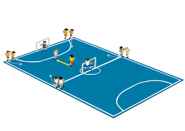

Como Funciona o Interclasse no Nosso Colégio
Entre setembro e novembro, ocorre uma pequena competição entre as turmas do ensino fundamental e ensino médio, com vários times disputando em suas chaves pelas medalhas de ouro.
Como no Interclasse de outras escolas, na nossa também há regras, variando de penalidades por ofensas e agressões dentro e fora de campo, ou até mesmo desrespeito com os alunos voluntários para auxiliar a direção nas súmulas.
Os jogos começam um dia depois da cerimônia de abertura, onde alunos carregam uma tocha para acender a chama. Os jogos duram o perÁodo escolar inteiro durante toda a semana.
Detalhes Adicionais sobre o Interclasse
Durante o perÁodo do Interclasse, os alunos se dividem em equipes para competir em diversos esportes e atividades. A competição promove a integração entre os estudantes e fortalece o espÁrito esportivo e de equipe. Cada esporte tem um conjunto especÁfico de regras e regulamentos que os participantes devem seguir.
A cerimônia de abertura é um evento muito aguardado, com a participação de todos os alunos e professores. A tocha é carregada por alunos selecionados, simbolizando o inÁcio dos jogos e o espÁrito de camaradagem e competição saudável.
Além dos jogos, o Interclasse inclui atividades culturais e sociais, oferecendo uma oportunidade para todos se envolverem e se divertirem. O evento é uma excelente chance para os alunos demonstrarem seus talentos e habilidades em um ambiente competitivo e amigável.

Alunos Mesários
Durante a semana de jogos, alunos voluntários ficam responsáveis pela execução das partidas de xadrez/dama, caçador, vôlei, futsal feminino/masculino e chute ao gol.
Eles ficam encarregados das pastas onde contêm o controle de quantos alunos são por time, quais turmas venceram em suas respectivas partidas, o tempo estimado de cada partida e a contagem de pontos.

Modalidades
Vôlei
Equipes: Se consiste em dois times, cada um com seis jogadores.
Quadra: Dividida por uma rede central, com dimensões de 9 metros de largura por 18 metros de comprimento.
Como Funciona - Estrutura:
- Toques: Cada time pode tocar na bola até três vezes antes de enviá-la de volta ao lado adversário.
- Toques devem ser feitos com qualquer parte do corpo, mas o toque deve ser limpo (sem segurar ou tocar a bola mais de uma vez consecutiva com a mesma parte do corpo).
Caçador / Queimada
Escolha do Caçador: O caçador pode ser escolhido por sorteio, como uma votação, ou por algum outro critério.
Área de Jogo: O jogo ocorre em uma área delimitada, que pode ser uma quadra, um parque, ou um espaço aberto.
Tempo de Jogo: Pode haver um limite de tempo para a captura ou o jogo pode continuar até que todos os caçados sejam capturados.
Movimentação: O caçador tem de acertar a bola nos caçados tentando tocá-los.
Captura: Quando a bola toca um caçado, o caçado está "capturado". Dependendo das regras, o caçado pode ficar parado em um lugar especÁfico até o final do jogo ou pode se tornar um novo caçador.
Futsal
Estrutura do Jogo:
- Equipes: 5 jogadores por equipe, incluindo o goleiro.
- Quadra: Menor que um campo de futebol, geralmente entre 25 a 42 metros de comprimento e 16 a 25 metros de largura.
- Objetivo: Marcar gols chutando a bola na rede adversária.
Regras Básicas:
- Tempo: Dois tempos de 20 minutos cada, com intervalo de 10 minutos.
- Bola: Menor e mais pesada que a do futebol, facilitando o controle.
- Substituições: Ilimitadas, podem ser feitas a qualquer momento.